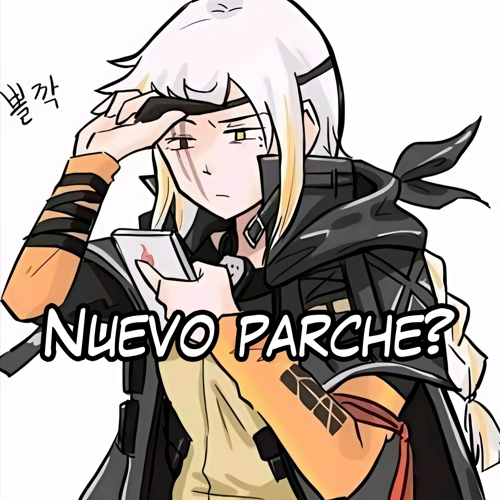
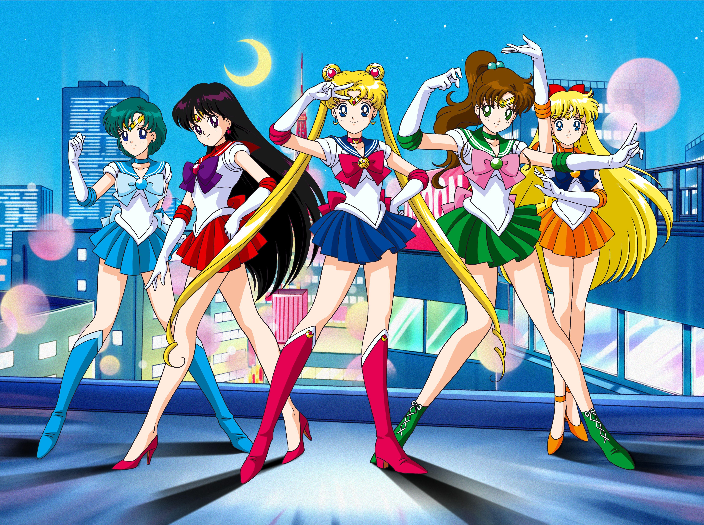
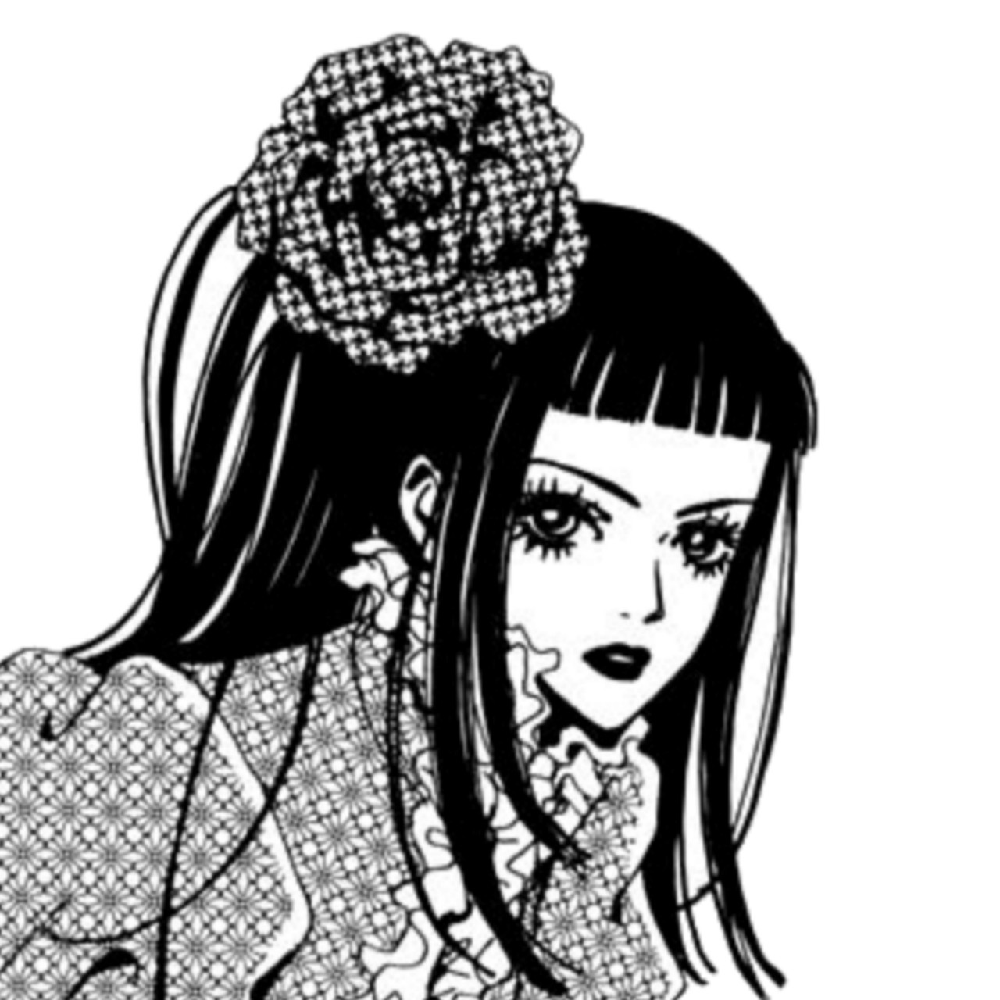
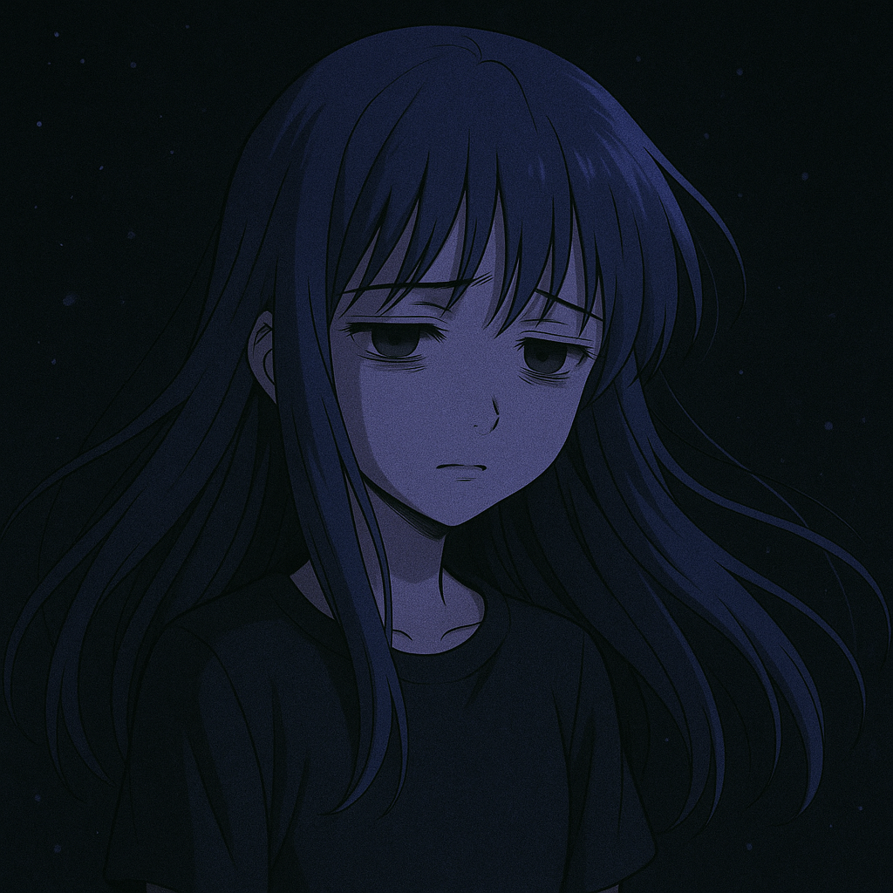
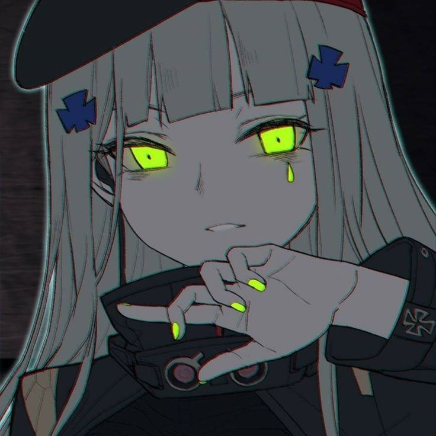
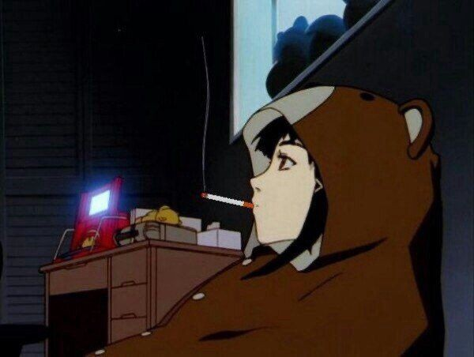
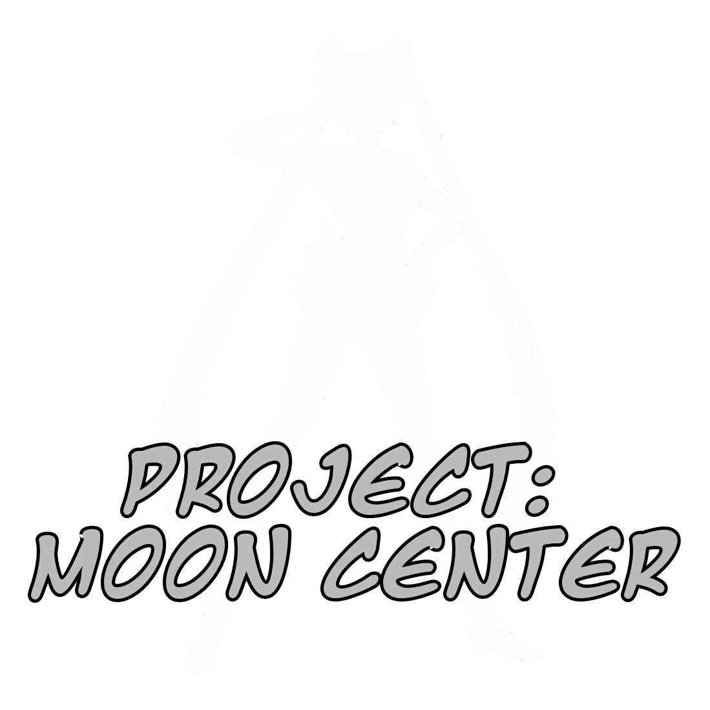
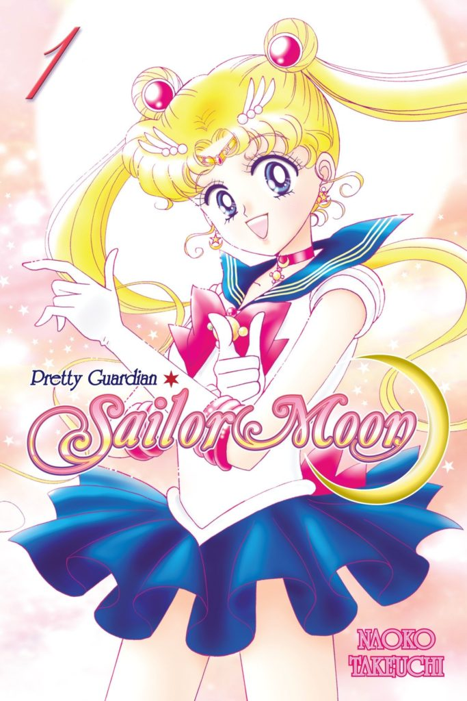

Noticias
Las mejores noticias sobre el proyecto

NuevoLee todos los detalles de los cambios, mejoras y fixes incluidos en esta nueva versión.
Leer completo →Nueva sección de soundtracks y música disponible. Descubre los mejores OST de tus Animes favoritos.
Explorar →Nuevo canal de WhatsApp para visualizar todo el contenido relevante. Únete a nuestra comunidad.
Únirse →Artículos
Análisis, reflexiones y cosas destacadas

NuevoDescubre información motivadora sobre cómo crear y compartir fanarts increíbles.
Leer más →
RecomendadoDescubre los géneros menor conocidos del anime y sus características únicas que deberías explorar.
Leer más →
AnálisisUna reflexión profunda desde la mirada de Rika Furude. Exploramos los temas principales del personaje.
Leer más →Conoce AntiRain, el nuevo proyecto de Moon Center. Innovación y creatividad combinadas.
Ver proyecto → Biografía
Biografía
Conoce más sobre el desarrollador de Moon Center, sus orígenes, historia y visión del proyecto.
Leer más →
ReflexiónUna reflexión sobre el desarrollo en conjunto y cómo la comunidad moldea los proyectos.
Leer más →
Fun FactsDescubre datos fascinantes sobre la creación y desarrollo de la página Moon Center.
Descubrir →
RoadmapConoce nuestro roadmap completo con los proyectos y características que pronto llegará a Moon Center.
Ver roadmap →Fanarts
Celebra la creatividad de la comunidad
Explora creaciones increíbles de la comunidad. Desde dibujos digitales hasta reinterpretaciones artísticas de tus personajes favoritos.
Ver galería →Mangas
Información sobre tus Mangas favoritos

ExplorarExplora nuestra colección curada de mangas. Fichas detalladas, análisis y recomendaciones personalizadas.
Ver colección →Anime
Información sobre tus Animes favoritos
¡Pronto llega!
Estamos preparando una sección completa de anime con información detallada de tus series favoritas. Vuelve pronto.
Videojuegos
Novedades y análisis sobre tus Videojuegos favoritos
¡Próximamente!
Estamos desarrollando una sección dedicada a videojuegos con análisis, reviews y noticias exclusivas.